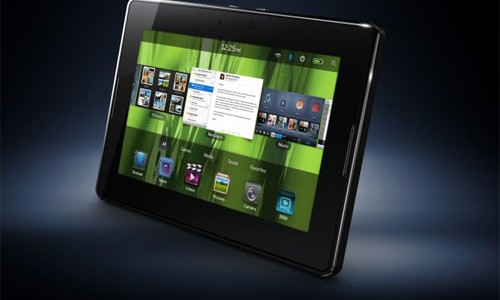

A Google lançará um novo tablet Android de 7 polegadas, que será produzido em parceria com a Huawei. A informação vem de Evan Blass, conhecido por acertar muitos vazamentos na indústria de dispositivos móveis.
Huawei vai colocar dentro do capô do 7P um processador Qualcomm Snapdragon 820 com GPU Adreno 530, 4 GB de memória RAM e 64 GB de armazenamento. Poder de sobra para rodar os aplicativos em uma tela de 7" AMOLED com resolução 2560x1440
Mais um dispositivo da Samsung surgiu em um novo teste de benchmark. Depois do que parece ser a atualização do Galaxy A7 para 2017, e depois o que deve ser o modelo do ano que vem do Galaxy A3 no GFXBench, agora tudo indica que é um tablet, com um processador Snapdragon 625 que surgiu no Geekbench, sob o código SM-T587P. O dispositivo possui um processador Qualcomm Snapdragon 625 de oito núcleos com arquitetura 64 bit e clock máximo de 2,02GHz. Para auxiliar o processamento, o aparelho é equipado também com 2GB de memória RAM. Tudo isso rodando o sistema Android 6.0.1 Marshmallow. A pontuação atingida pelo tablet foi de 808 no single-core e 3180 no mult-core.
Uma das maiores adições do aparelho é justamente o S Pen, uma vez que, com ele, novos recursos de software podem ser aproveitados. São funções que foram introduzidas ao mercado pelo recente Galaxy Note 7. As versões anteriores do tablet também traziam a stylus, mas eram limitadas em funcionalidade e não iam muito além das ações básicas do fino acessório.
A partir de agora, todos que quiserem aproveitar os recursos da versão de testes do comunicador vão ter muito mais facilidade para isso. Pois é.... O WhatsApp Beta está chegando à Google Play. Quem quiser testar a versão Beta do WhatsApp terá apenas que se inscrever como Beta Tester e aguardar pela aprovação. Depois disso, o usuário será autorizado a realizar o download diretamente na Google Play para testar recursos antes de eles chegarem à versão estável.
Durante a conferência da Apple, Phil Schiller, vice-presidente de marketing da companhia, revelou uma nova linha de produtos Beats que serão compatíveis com o chip W1 wireless. Os modelos são o novo Solo 3 Wireless, o Powerbeats 3 e um novo modelo chamado Beats X.
Intel, Bullnet e a Caixa deve investir três milhões de euros em um programa desenvolvido por engenheiros
em Tenerife para incorporar esta tecnologia em telefones celulares.
O 3D Natural é um sistema de captura de imagem que utiliza algoritmos baseados em uma
linguagem de programação complicada, mas para usá-lo, o usuário só terá de puxar o gatilho. Pressionar o botão.
A câmera captura um único tiro e, em seguida, o software gera todos os pontos de vista possíveis.
© Infomail Profissional